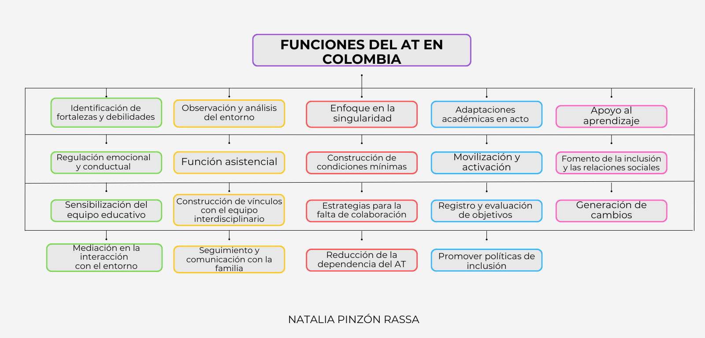

El acompañamiento Terapéutico en el contexto educativo
Funciones
🧩 Explora las funciones del AT
En este apartado encontrarás las funciones específicas del acompañante terapéutico.
A través de varias secciones, entenderás qué tareas realiza este rol dentro del ámbito escolar, cómo se implementan en la práctica y qué impacto tienenen la inclusión de los estudiantes.
¿Qué hacen los profesionales del Acompañamiento Terapéutico?
En un estudio realizado en Bogotá, se identificaron 19 funciones que cumplen las acompañantes terapéuticas en contextos educativos. Estas funciones buscan apoyar a niños y niñas con necesidades particulares, ayudándolos a integrarse y participar en el ambiente escolar.
A continuación, te explicamos cada función de forma sencilla, con ejemplos:
1. Adaptación académica en acto Modifican las tareas o las explicaciones cuando el acompañado no entiende o tiene alguna dificultad alta. Ejemplo: Si un niño no entiende la tarea de matemáticas, la acompañante se la explica con dibujos o ejemplos fáciles.
2. Observación del entorno Miran cómo el acompañado se relaciona con el lugar y con las personas que lo habitan. Ejemplo: Observa que el acompañado se pone solo cuando hay mucho ruido en el aula.
3. Análisis de dinámicas sociales Revisan cómo el acompañado se lleva con sus compañeros y profesores. Ejemplo: Se da cuenta si el acompañado no lo dejan jugar o si lo molestan.
4. Identificación de fortalezas y debilidades Descubren qué cosas le salen bien y cuáles le cuestan. Ejemplo: Nota que una niña se comunica mejor dibujando que hablando.
5. Atención a la singularidad Se adaptan a la forma especial de aprender de cada acompañado. Ejemplo: Si un acompañado aprende mejor moviéndose, le propone caminar mientras estudia.
6. Regulación emocional Ayudan el acompañado a calmarse cuando se enoja o se pone triste. Ejemplo: Si un niño se frustra, lo ayuda a tranquilizarse sin salir del aula.
7. Regulación conductual Acompañan el acompañado cuando tiene comportamientos difíciles. Ejemplo: Si un niño grita cuando algo no le gusta, promueve decirlo con palabras.
8. Función asistencial Ayudan el acompañado con sus necesidades básicas. Ejemplo: Acompaña si necesita ayuda para ir al baño, limpiarse o comer.
9. Construcción de condiciones mínimas Buscan que el acompañado esté cómodo en el aula. Ejemplo: Promueve que se respete su tiempo de descanso si lo necesita.
10. Movilización del estudiante Motivan al acompañado a participar en actividades escolares. Ejemplo: Invita a un niño con un juego o chiste, a unirse a la clase de arte aunque no quiera al principio.
11. Activación del estudiante Ayudan al acompañado a tener ganas de aprender y activarse en ciertos momentos díficiles. Ejemplo: Propone actividades con personajes que le gustan.
12. Promoción de vínculos sociales Ayudan al acompañado a relacionarse con sus compañeros. Ejemplo: Organizan un juego donde el acompañado toma un rol.
13. Sensibilización del equipo educativo Explican a los maestros qué hace la acompañante terapéutica. Ejemplo: comenta a una maestra como son sus funciones y además se acerca de manera cálida para mostrar cómo funciona el rol.
14. Vinculación con el equipo interdisciplinario Hablan con otros profesionales que ayudan al acompañado. Ejemplo: Se comunica con la terapeuta ocupacional para trabajar en equipo sostener objetivos de esta área en la vida diaria.
15. Manejo de la falta de colaboración Buscan soluciones cuando alguien en el equipo no quiere ayudar. Ejemplo: Se acerca a un maestro cuando nota que no quiere adaptar la actividad.
16. Supervisión profesional Hablan con otros profesionales sobre su trabajo y revisan lo que hacen con una opinión externa profesional. Ejemplo: Tiene reuniones con una supervisora para pensar mejor los casos.
17. Coordinación institucional Van y planean reuniones de la institución educativa para planear apoyos en equipo. Ejemplo: Participa en comité para decidir cómo apoyar a un acompañado.
18. Evaluación y registro Escriben notas y registros sobre cómo va el acompañado. Ejemplo: Hace un informe mensual con sus avances, desafios y resultados.
19. Generación de cambio Su trabajo ayuda a que el acompañado presente cambios en sus síntomas y se sienta parte del grupo. Ejemplo: Después de un tiempo, un niño que no hablaba empieza a participar en clase.
Lectura facilitada
A continuación, se muestra un mapa conceptual construido a partir de los relatos de acompañantes terapéuticas en Bogotá, Colombia. Este trabajo surge de entrevistas en las que ellas describen su labor en el ámbito educativo, destacando las funciones que desempeñan y los desafíos que enfrentan. A través de este mapa, se podrá visualizar las funciones del acompañamiento terapéutico que influyen en la inclusión, el aprendizaje y la regulación emocional de los estudiantes. Les invito a explorarlo, comprender su estructura y reflexionar sobre el impacto de este rol en el sistema educativo.

Audio
¡Te invito a escuchar mi podcast! 🎧 En este episodio hablo sobre las funciones del Acompañante Terapéutico, reunidas a partir de un estudio realizado en Bogotá. Si te interesa conocer más sobre este rol en contextos educativos, podrás escuchar este podcast que cuenta con información clara y cercana.
Apoyo visual
Aquí encontrarás un video que te explicara de manera sencilla las funciones del Acompañamiento terapéutico en el contexto educativo en Bogotá, Colombia.
👀 ¡Es hora de ver en acción!
Ya conoces las características del acompañante terapéutico. 👉 Ahora te invitamos a ir a "Para mirar de un vistazo", donde podrás ver de forma clara y visual las funciones principales de este rol tan importante.
Haz clic en "Siguiente" para continuar tu recorrido. ➡️